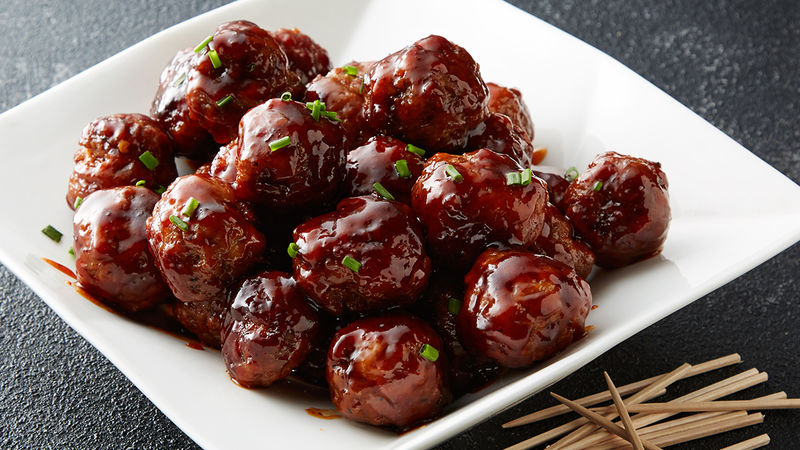

Meatballs

Meatballs covered in barbecue sauce
Enjoy these meatballs in a wonderfully tangy sauce! Use your favorite flavor of barbecue sauce. When the meatballs are done, you can place them in a slow cooker/server to keep them warm.
Ingredients
- 2 pounds ground beef
- 1 ½ cups fresh bread crumbs
- ¼ cup chopped onion
- ½ cup milk
- 1 ½ teaspoons salt
- 2 eggs
- 1 (18 ounce) bottle barbecue sauce
Steps
- Preheat oven to 375 degrees F (190 degrees C).
- In a large bowl, combine the beef, bread, onion, milk, salt and eggs. Shape into little meatballs, about 1 inch in size. Place the meatballs into a 9x13 inch baking dish.
- Bake at 375 degrees F (190 degrees C) for 25 to 30 minutes. Pour barbecue sauce over the meatballs and bake for 35 more minutes.
Back to top
Back To Main Menu